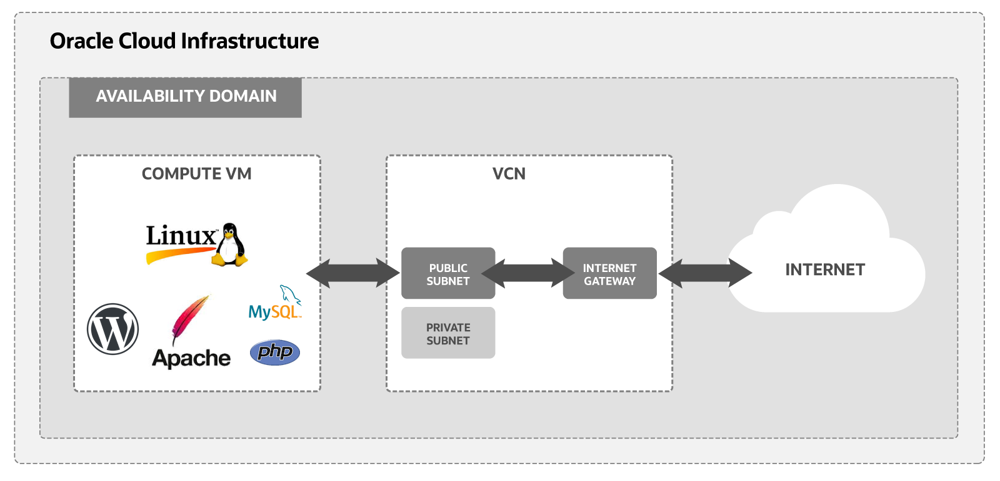
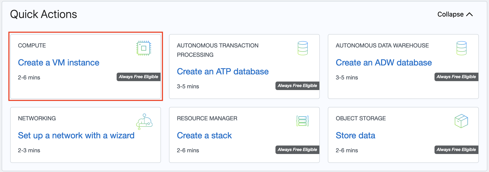
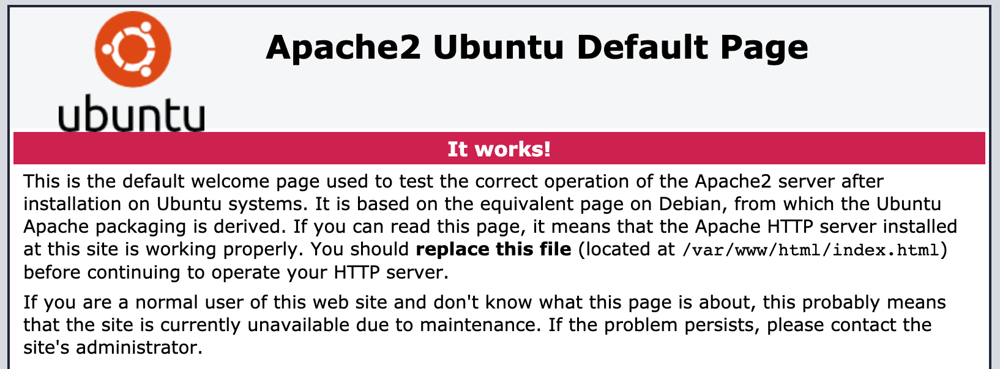
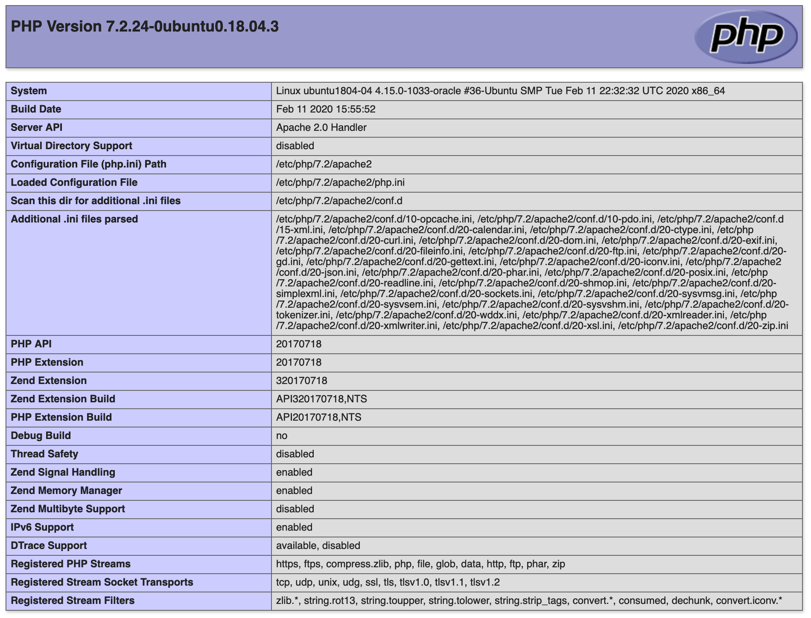

<div class="initial-content">
  <div id="main" role="main">

  <article class="page has-sidebar has-slides" itemscope itemtype="https://schema.org/CreativeWork">
    <meta itemprop="headline" content="Free Tier: Install WordPress on an Ubuntu Instance">
    
    <meta itemprop="datePublished" content="2021-11-24T09:45:00+00:00">
    


    <header>
      <h1 id="page-title" class="page__title" itemprop="headline">Free Tier: Install WordPress on an Ubuntu Instance
</h1>
      


    </header>

    <section class="page__content" itemprop="text">
      
        <!-- <aside class="sidebar__right sticky">
          <nav class="slides-nav"><ul><li class="active" data-target-slide="0"><a href="javascript:cool.slides.goToSlide(0)">Intro</a></li>
<li data-target-slide="1"><a href="javascript:cool.slides.goToSlide(1)">Before you Begin</a></li>
<li data-target-slide="2"><a href="javascript:cool.slides.goToSlide(2)">1. Set up a Compartment for Development</a></li>
<li data-target-slide="3"><a href="javascript:cool.slides.goToSlide(3)">2. Install your Ubuntu Linux Instance</a></li>
<li data-target-slide="4"><a href="javascript:cool.slides.goToSlide(4)">3. Enable Internet Access</a></li>
<li data-target-slide="5"><a href="javascript:cool.slides.goToSlide(5)">4. Install and Configure Apache, PHP 7, MySQL, and WordPress</a></li>
<li data-target-slide="6"><a href="javascript:cool.slides.goToSlide(6)">What's Next</a></li></ul></nav>
        </aside> -->
      

        <div class="slides" id="slideshow">

  <div class="slide active" id="slide-0">

    <h2 class="slide__title"><span class="slide__num">1</span> Introduction</h2>

    <p>In this tutorial, use an Oracle Cloud Infrastructure Free Tier account to set up an Ubuntu instance. Next, install an Apache web server, PHP 7, MySQL, and finally WordPress. After installation, access your new WordPress installation from the internet. This tutorial covers all the steps necessary to set up a virtual network, a compute instance, and connect the host to the internet. Key tasks include how to:</p>

    <ul>
      <li>Set up a compartment for your development work.</li>
      <li>Install your Ubuntu Linux instance and connect it to your Virtual Cloud Network (VCN).
        <ul>
          <li>Set up an Oracle Cloud Infrastructure virtual cloud network and related network services required for your host to connect to the internet.</li>
          <li>Set up <code class="language-plaintext highlighter-rouge">ssh</code> encryption keys to access your Ubuntu Linux Server.</li>
        </ul>
      </li>
      <li>Configure ingress rules for your VCN.</li>
      <li>Configure Apache, PHP 7, MySQL, and WordPress on your VM.</li>
      <li>Connect to your instance from the internet.</li>
    </ul>

    <p>Here’s a simplified diagram of the setup for your Linux VM.</p>

    <picture class="">
                <source srcset="assets/wordpress-apache-diagram.png 1x" />
                
            </picture>

    <p>For additional information, see:</p>

    <ul>
      <li><a href="https://www.oracle.com/cloud/free/">Start for Free</a></li>
      <li><a href="https://docs.oracle.com/iaas/developer-tutorials/tutorials/apache-on-ubuntu/01oci-ubuntu-apache-summary.htm">Free Tier: Install Apache and PHP on an Ubuntu Instance</a></li>
    </ul>

    <div class="slide__nav"><a href="javascript:cool.slides.goToSlide(1)" class="slides__btn--begin">Begin &raquo;</a></div>

  </div>

  <div class="slide" id="slide-1">

    <h2 class="slide__title"><span class="slide__num">2</span> Before you Begin</h2>

    <p>To successfully complete this tutorial, you must have the following:</p>

    <h3 id="requirements">Requirements</h3>

    <ul>
      <li>An Oracle Cloud Infrastructure Free Tier account. <a href="https://www.oracle.com/cloud/free/">Start for Free</a>.</li>
      <li>A MacOS, Linux, or Windows computer with <code class="language-plaintext highlighter-rouge">ssh</code> support installed.</li>
    </ul>

    <div class="slide__nav"><a href="javascript:cool.slides.goToSlide(0)">&laquo; Back</a> <a href="javascript:cool.slides.goToSlide(2)">Continue &raquo;</a></div>

  </div>

  <div class="slide" id="slide-2">

    <h2 class="slide__title"><span class="slide__num">3</span> 1. Set up a Compartment for Development</h2>

    <p>Configure a compartment for your development.</p>

    <h3 id="create-a-compartment">Create a compartment</h3>

    <p>Create a compartment for the resources that you create in this tutorial.</p>

    <ul>
      <li>Log in to the Oracle Cloud Infrastructure Console.</li>
      <li>Open the navigation menu and click Identity &amp; Security. Under Identity, click Compartments.</li>
      <li>Click Create Compartment.</li>
      <li>Fill in the following information:
        <ul>
          <li>Name: <your-compartment-name></your-compartment-name></li>
          <li>Description: Compartment for <your-description>.</your-description></li>
          <li>Parent Compartment: <your-tenancy>(root)</your-tenancy></li>
        </ul>
      </li>
      <li>Click Create Compartment.</li>
    </ul>

    <p>Reference: <a href="https://docs.oracle.com/iaas/Content/Identity/Tasks/managingcompartments.htm#To">Create a compartment</a></p>

    <div class="slide__nav"><a href="javascript:cool.slides.goToSlide(1)">&laquo; Back</a> <a href="javascript:cool.slides.goToSlide(3)">Continue &raquo;</a></div>

  </div>

  <div class="slide" id="slide-3">

    <h2 class="slide__title"><span class="slide__num">4</span> 2. Install your Ubuntu Linux Instance</h2>

    <p>Use the Create a VM Instance wizard to create a new compute instance.</p>

    <p>The wizard does several things when installing the instance:</p>

    <ul>
      <li>Creates and installs a compute instance running Ubuntu Linux.</li>
      <li>Creates a VCN with the required subnet and components needed to connect your Ubuntu Linux instance to the internet.</li>
      <li>Creates an <code class="language-plaintext highlighter-rouge">ssh</code> key pair you use to connect to your instance</li>
    </ul>

    <h3 id="review-installation-steps">Review Installation Steps</h3>

    <p>To get started installing your instance with the Create a VM Instance wizard, follow these steps:</p>

    <ol>
      <li>From the main landing page, select Create a VM Instance wizard.</li>
    </ol>

    <picture class="">
                <source srcset="assets/wordpress-apache-quickactions.png 1x" />
                
            </picture>

    <p>The Create Compute Instance page is displayed. It has a section for Placement, Image and shape, Networking, Add SSH keys, and Boot volume.</p>
    <ol>
      <li>Choose the Name and Compartment.
 Initial Options:
        <ul>
          <li>Name: <name-for-the-instance></name-for-the-instance></li>
          <li>Create in compartment: <your-compartment-name>
 Enter a value for the name or leave the system supplied default.</your-compartment-name></li>
        </ul>
      </li>
      <li>
        <p>Review the Placement settings, and click the Show advanced options link.
 Take the default values. Your data might look similar to the following:</p>

        <p>Availability domain:</p>

        <ul>
          <li>Availability domain: AD-1</li>
          <li>Capacity type: On-demand capacity</li>
          <li>Fault domain: Let Oracle choose the best fault domain</li>
        </ul>

        <p>For Free Tier, use Always Free Eligible option for availability domain.</p>
      </li>
      <li>Review the Image and shape settings.
        <ul>
          <li>Select the latest Ubuntu image.
            <ul>
              <li>Click Change Image.</li>
              <li>Select the latest Ubuntu image.</li>
              <li>Click Select Image. Your image is displayed, for example your data looks similar to the following:
                <ul>
                  <li>Image: Canonical Ubuntu 20.04</li>
                  <li>Image build: 2020.12.11-0</li>
                </ul>
              </li>
              <li>Take the default values for Shape. For example, your data looks similar to the following:
                <ul>
                  <li>Shape: VM.Standard.E2.1.Micro</li>
                  <li>OCPU count: 1</li>
                  <li>Memory (GB): 1</li>
                  <li>Network bandwidth (Gbps): 0.48
  For Free Tier, use Always Free Eligible shape options.</li>
                </ul>
              </li>
            </ul>
          </li>
        </ul>
      </li>
      <li>
        <p>Review the Networking settings. Take the default values provided by the wizard.</p>

        <p>The following is sample data. The actual values change over time or differ in a different data center.</p>

        <ul>
          <li>Virtual cloud network: vcn-<date>-<time></time></date></li>
          <li>Subnet: vcn-<date>-<time></time></date></li>
          <li>Assign a public IPv4 address: Yes</li>
        </ul>
      </li>
      <li>Review the Add SSH keys settings. Take the default values provided by the wizard.
        <ul>
          <li>Select the Generate a key pair for me option.</li>
          <li>Click Save Private Key and Save Public Key to save the private and public SSH keys for this compute instance.</li>
        </ul>

        <p>If you want to use your own SSH keys, select one of the options to provide your public key.</p>

        <p>Put your private and public key files in a safe location. You cannot retrieve keys again after the compute instance has been created.</p>
      </li>
      <li>
        <p>Review the Configure boot volume settings. Take the default values provided by the wizard. Leave all check boxes unchecked.</p>
      </li>
      <li>
        <p>Click Create to create the instance. Provisioning the system might take several minutes.</p>

        <p>You have successfully created an Ubuntu Linux instance.</p>
      </li>
    </ol>

    <div class="slide__nav"><a href="javascript:cool.slides.goToSlide(2)">&laquo; Back</a> <a href="javascript:cool.slides.goToSlide(4)">Continue &raquo;</a></div>

  </div>

  <div class="slide" id="slide-4">

    <h2 class="slide__title"><span class="slide__num">5</span> 3. Enable Internet Access</h2>

    <p>The Create a VM Instance wizard automatically creates a VCN for your VM. You add an ingress rule to your subnet to allow internet connections on port 80.</p>

    <h3 id="create-an-ingress-rule-for-your-vcn">Create an Ingress Rule for your VCN</h3>

    <p>Follow these steps to select your VCN’s public subnet and add the ingress rule.</p>

    <ol>
      <li>Open the navigation menu and click Networking, and then click Virtual Cloud Networks.</li>
      <li>Select the VCN you created with your compute instance.</li>
      <li>With your new VCN displayed, click <your-subnet-name> subnet link.
The public subnet information is displayed with the Security Lists at the bottom of the page. A link to the Default Security List for your VCN is displayed.</your-subnet-name></li>
      <li>Click the Default Security List link.
 The default Ingress Rules for your VCN are displayed.</li>
      <li>Click Add Ingress Rules.
 An Add Ingress Rules dialog is displayed.</li>
      <li>Fill in the ingress rule with the following information.
        <ul>
          <li>Stateless: Checked</li>
          <li>Source Type: CIDR</li>
          <li>Source CIDR: 0.0.0.0/0</li>
          <li>IP Protocol: TCP</li>
          <li>Source port range: (leave-blank)</li>
          <li>Destination Port Range: 80</li>
          <li>Description: Allow HTTP connections</li>
        </ul>

        <p>Click Add Ingress Rule. Now HTTP connections are allowed. Your VCN is configured for Apache server.</p>
      </li>
      <li>Click Add Ingress Rule. Now HTTP connections are allowed. Your VCN is configured for Apache server.
 You have successfully created an ingress rule that makes your instance available from the internet.</li>
    </ol>

    <div class="slide__nav"><a href="javascript:cool.slides.goToSlide(3)">&laquo; Back</a> <a href="javascript:cool.slides.goToSlide(5)">Continue &raquo;</a></div>

  </div>

  <div class="slide" id="slide-5">

    <h2 class="slide__title"><span class="slide__num">6</span> 4. Install and Configure Apache, PHP 7, MySQL, and WordPress</h2>

    <p>Next install and configure Apache web server and PHP to run on your Ubuntu Linux instance.</p>

    <h3 id="configure-the-ubuntu-firewall">Configure the Ubuntu Firewall</h3>

    <p>Connect to your Ubuntu instance and configure your firewall settings. Follow these steps:</p>

    <ol>
      <li>Log into your free tier account.</li>
      <li>Open the navigation menu and click Compute. Under Compute, click Instances.</li>
      <li>Click the link to the instance you created in the previous step.
 From the Instance Access section, write down the Public IP Address the system created for you. You use this IP address to connect to your instance.</li>
      <li>Open a Terminal window.</li>
      <li>Change into the directory where you stored the ssh encryption keys you created in part one.</li>
      <li>
        <p>Connect to your VM with this SSH command.</p>

        <div class="language-console highlighter-rouge"><div class="highlight"><pre class="highlight"><code><span class="gp"> ssh -i &lt;your-private-key-file&gt;</span><span class="w"> </span>ubuntu@&lt;your-public-ip-address&gt;
</code></pre></div>        </div>

        <p>Since you identified your public key when you created the VM, this command logs you into your VM. You can now issue <code class="language-plaintext highlighter-rouge">sudo</code> commands to install and start your server.</p>
      </li>
      <li>
        <p>Update firewall settings.
 Next, update your iptables configuration to allow HTTP traffic. To update iptables, run the following commands.</p>

        <div class="language-console highlighter-rouge"><div class="highlight"><pre class="highlight"><code><span class="go"> sudo iptables -I INPUT 6 -m state --state NEW -p tcp --dport 80 -j ACCEPT
</span></code></pre></div>        </div>

        <div class="language-console highlighter-rouge"><div class="highlight"><pre class="highlight"><code><span class="go"> sudo netfilter-persistent save
</span></code></pre></div>        </div>
      </li>
    </ol>

    <p>The commands add a rule to allow HTTP traffic and saves the changes to the iptables configuration files.</p>

    <h3 id="install-apache-server">Install Apache Server</h3>

    <ol>
      <li>
        <p>Install Apache Server.</p>

        <div class="language-console highlighter-rouge"><div class="highlight"><pre class="highlight"><code><span class="go"> sudo apt update
</span></code></pre></div>        </div>

        <div class="language-console highlighter-rouge"><div class="highlight"><pre class="highlight"><code><span class="go"> sudo apt -y install apache2
</span></code></pre></div>        </div>
      </li>
      <li>
        <p>Next, start Apache.</p>

        <div class="language-console highlighter-rouge"><div class="highlight"><pre class="highlight"><code><span class="go"> sudo systemctl restart apache2
</span></code></pre></div>        </div>
      </li>
      <li>
        <p>You can now test your server.</p>

        <p>You can test your server from the command line with curl localhost. Or, you can connect your browser to the public IP address assigned to your VM:</p>

        <p><code class="language-plaintext highlighter-rouge">http://&lt;your-public-ip-address&gt;</code>. The page looks similar to:</p>

        <picture class="">
             <source srcset="assets/wordpress-apache-ubuntu-default.png 1x" />
             
         </picture>
      </li>
    </ol>

    <h3 id="install-php">Install PHP</h3>

    <ol>
      <li>
        <p>Install PHP and then some helpful modules with the following commands.</p>

        <div class="language-console highlighter-rouge"><div class="highlight"><pre class="highlight"><code><span class="go"> sudo apt -y install php
</span></code></pre></div>        </div>

        <div class="language-console highlighter-rouge"><div class="highlight"><pre class="highlight"><code><span class="go"> sudo apt -y install php-mysql php-curl php-gd php-zip
</span></code></pre></div>        </div>
      </li>
      <li>
        <p>Verify installation and restart Apache.</p>

        <div class="language-console highlighter-rouge"><div class="highlight"><pre class="highlight"><code><span class="go"> php -v
</span></code></pre></div>        </div>

        <div class="language-console highlighter-rouge"><div class="highlight"><pre class="highlight"><code><span class="go"> sudo systemctl restart apache2
</span></code></pre></div>        </div>
      </li>
      <li>
        <p>Add a PHP test file to your VM.</p>

        <div class="language-console highlighter-rouge"><div class="highlight"><pre class="highlight"><code><span class="go"> sudo vi /var/www/html/info.php
</span></code></pre></div>        </div>
      </li>
      <li>
        <p>In the file, input the following text and save the file:</p>

        <div class="language-php highlighter-rouge"><div class="highlight"><pre class="highlight"><code> <span class="cp">&lt;?php</span>
 <span class="nb">phpinfo</span><span class="p">();</span>
 <span class="cp">?&gt;</span>
</code></pre></div>        </div>
      </li>
      <li>
        <p>Connect to <code class="language-plaintext highlighter-rouge">http://&lt;your-public-ip-address&gt;/info.php</code>.</p>

        <p>The browser produces a listing of PHP configuration on your VM.</p>

        <picture class="">
             <source srcset="assets/wordpress-apache-php-ubuntu-details.png 1x" />
             
         </picture>

        <p>You have successfully installed Apache and PHP 7 on your Oracle Cloud Infrastructure instance.</p>

        <p>After you are done testing, delete the <code class="language-plaintext highlighter-rouge">info.php</code> file.</p>
      </li>
    </ol>

    <h3 id="configure-your-apache-html-directory">Configure your Apache HTML Directory</h3>

    <p>Set up your Apache server to read and write from the <code class="language-plaintext highlighter-rouge">/var/www/html</code> directory.</p>

    <ol>
      <li>
        <p>Add your username to the <code class="language-plaintext highlighter-rouge">www-data</code>group so you can edit the <code class="language-plaintext highlighter-rouge">/var/www/html</code> directory.</p>

        <div class="language-console highlighter-rouge"><div class="highlight"><pre class="highlight"><code><span class="gp"> sudo adduser $</span>USER www-data
</code></pre></div>        </div>
      </li>
      <li>
        <p>Now change the ownership of the content directory.</p>

        <div class="language-console highlighter-rouge"><div class="highlight"><pre class="highlight"><code><span class="go"> sudo chown -R www-data:www-data /var/www/html
</span></code></pre></div>        </div>
      </li>
      <li>
        <p>Change permissions on the files and directory.</p>

        <div class="language-console highlighter-rouge"><div class="highlight"><pre class="highlight"><code><span class="go"> sudo chmod -R g+rw /var/www/html
</span></code></pre></div>        </div>
      </li>
      <li>
        <p>Reboot your machine for changes to take effect.</p>
      </li>
    </ol>

    <h3 id="install-and-configure-mysql-server-and-client">Install and Configure MySQL Server and Client</h3>

    <p>Next, you install and configure the MySQL server and client so it can be used with WordPress.</p>

    <ol>
      <li>
        <p>Install the MySQL Server package.</p>

        <div class="language-console highlighter-rouge"><div class="highlight"><pre class="highlight"><code><span class="go"> sudo apt -y install mysql-server
</span></code></pre></div>        </div>

        <p>This step can take some time.</p>
      </li>
      <li>
        <p>Next, perform a secure configuration of MySQL.</p>

        <div class="language-console highlighter-rouge"><div class="highlight"><pre class="highlight"><code><span class="go"> sudo mysql_secure_installation
</span></code></pre></div>        </div>

        <p>Produces this output:</p>

        <div class="language-console highlighter-rouge"><div class="highlight"><pre class="highlight"><code><span class="go"> Securing the MySQL server deployment.
                            
 Connecting to MySQL using a blank password.
</span></code></pre></div>        </div>
      </li>
      <li>
        <p>Turn on Password Validation:</p>

        <div class="language-console highlighter-rouge"><div class="highlight"><pre class="highlight"><code><span class="go"> VALIDATE PASSWORD COMPONENT can be used to test passwords
 and improve security. It checks the strength of password
 and allows the users to set only those passwords which are
 secure enough. Would you like to set up VALIDATE PASSWORD component?
    
 Press y|Y for Yes, any other key for No:    
</span></code></pre></div>        </div>
      </li>
      <li>Select <code class="language-plaintext highlighter-rouge">Y</code>.</li>
      <li>
        <p>Select the password validation level.</p>

        <div class="language-console highlighter-rouge"><div class="highlight"><pre class="highlight"><code><span class="go"> There are three levels of password validation policy:

</span><span class="gp"> LOW    Length &gt;</span><span class="o">=</span> 8
<span class="gp"> MEDIUM Length &gt;</span><span class="o">=</span> 8, numeric, mixed <span class="k">case</span>, and special characters
<span class="gp"> STRONG Length &gt;</span><span class="o">=</span> 8, numeric, mixed <span class="k">case</span>, special characters and dictionary file
<span class="go">
 Please enter 0 = LOW, 1 = MEDIUM and 2 = STRONG:  
</span></code></pre></div>        </div>
      </li>
      <li>Select a level.</li>
      <li>
        <p>Set the root password.</p>

        <div class="language-console highlighter-rouge"><div class="highlight"><pre class="highlight"><code><span class="go"> Please set the password for root here.

 New password: 

 Re-enter new password: 

 Estimated strength of the password: 100 
 Do you wish to continue with the password provided?(Press y|Y for Yes, any other key for No) :
</span></code></pre></div>        </div>
      </li>
      <li>
        <p>Select the remaining security options.</p>

        <div class="language-console highlighter-rouge"><div class="highlight"><pre class="highlight"><code><span class="go"> Remove anonymous users? (Press y|Y for Yes, any other key for No) : 
 Disallow root login remotely? (Press y|Y for Yes, any other key for No) : 
 Remove test database and access to it? (Press y|Y for Yes, any other key for No) : 
 Reload privilege tables now? (Press y|Y for Yes, any other key for No) : 
 Success.

 All done! 
</span></code></pre></div>        </div>
      </li>
      <li>
        <p>Log in to MySQL.</p>

        <div class="language-console highlighter-rouge"><div class="highlight"><pre class="highlight"><code><span class="go"> sudo mysql
</span></code></pre></div>        </div>

        <p>You are given a MySQL prompt.</p>
      </li>
      <li>
        <p>List the default databases.</p>

        <div class="language-console highlighter-rouge"><div class="highlight"><pre class="highlight"><code><span class="gp">mysql&gt;</span><span class="w"> </span>show databases<span class="p">;</span>
<span class="go">+--------------------+
| Database           |
+--------------------+
| information_schema |
| mysql              |
| performance_schema |
| sys                |
+--------------------+
4 rows in set (0.01 sec)
</span></code></pre></div>        </div>
      </li>
      <li>
        <p>Create a user for MySQL.</p>

        <div class="language-console highlighter-rouge"><div class="highlight"><pre class="highlight"><code><span class="gp">mysql&gt;</span><span class="w"> </span>CREATE USER <span class="s1">'&lt;your-user-name&gt;'</span>@<span class="s1">'localhost'</span> IDENTIFIED BY <span class="s1">'&lt;your-password&gt;'</span><span class="p">;</span>
<span class="go">Query OK, 0 rows affected (0.01 sec)
</span></code></pre></div>        </div>
      </li>
      <li>
        <p>Make the user an admin.</p>

        <div class="language-console highlighter-rouge"><div class="highlight"><pre class="highlight"><code><span class="gp">mysql&gt;</span><span class="w"> </span>GRANT ALL PRIVILEGES ON <span class="k">*</span>.<span class="k">*</span> TO <span class="s1">'&lt;your-user-name&gt;'</span>@<span class="s1">'localhost'</span><span class="p">;</span>
<span class="go">Query OK, 0 rows affected (0.01 sec)
</span></code></pre></div>        </div>
      </li>
      <li>
        <p>Create your WordPress database.</p>

        <div class="language-console highlighter-rouge"><div class="highlight"><pre class="highlight"><code><span class="gp">mysql&gt;</span><span class="w"> </span>create database wpdb<span class="p">;</span>
<span class="go">Query OK, 1 row affected (0.01 sec)
</span></code></pre></div>        </div>
      </li>
      <li>
        <p>Check the result.</p>

        <div class="language-console highlighter-rouge"><div class="highlight"><pre class="highlight"><code><span class="gp">mysql&gt;</span>show databases<span class="p">;</span>
<span class="go">+--------------------+
| Database           |
+--------------------+
| information_schema |
| mysql              |
| performance_schema |
| sys                |
| wpdb               |
+--------------------+
5 rows in set (0.00 sec)
</span></code></pre></div>        </div>
      </li>
      <li>
        <p>Flush privileges to clear cached memory.</p>

        <div class="language-console highlighter-rouge"><div class="highlight"><pre class="highlight"><code><span class="gp">mysql&gt;</span><span class="w"> </span>FLUSH PRIVILEGES<span class="p">;</span>
<span class="go">Query OK, 0 rows affected (0.00 sec)

</span><span class="gp">mysql&gt;</span><span class="w"> </span><span class="nb">exit</span><span class="p">;</span>
<span class="go">Bye
</span></code></pre></div>        </div>
      </li>
    </ol>

    <h3 id="install-and-configure-wordpress">Install and Configure WordPress</h3>

    <p>Download and follow these steps to install WordPress on your server.</p>

    <ol>
      <li>Open a terminal window and create a <code class="language-plaintext highlighter-rouge">tmp</code> directory.</li>
      <li>
        <p>Download the WordPress Linux zip from https://wordpress.org/download/ and unzip.</p>

        <div class="language-console highlighter-rouge"><div class="highlight"><pre class="highlight"><code><span class="gp"> wget &lt;url-for-download&gt;</span>.gz
</code></pre></div>        </div>

        <div class="language-console highlighter-rouge"><div class="highlight"><pre class="highlight"><code><span class="gp"> tar xvfz &lt;download-file-name&gt;</span>.gz
</code></pre></div>        </div>

        <p>The command creates a <code class="language-plaintext highlighter-rouge">wordpress</code> directory with the PHP code for WordPress in it.</p>
      </li>
      <li>
        <p>Copy the contents of the wordpress directory to the <code class="language-plaintext highlighter-rouge">/var/www/htm</code>l directory.</p>

        <div class="language-console highlighter-rouge"><div class="highlight"><pre class="highlight"><code><span class="gp"> cp -R /home/&lt;your-username&gt;</span>/tmp/wordpress/<span class="k">*</span> /var/www/html
</code></pre></div>        </div>

        <p>The contents of the <code class="language-plaintext highlighter-rouge">wordpress</code> directory are copied into the <code class="language-plaintext highlighter-rouge">/var/www/html</code> directory. This command is a sample. Your command differs depending on the name of your directories.</p>
      </li>
      <li>
        <p>Change into to the <code class="language-plaintext highlighter-rouge">/var/www/html</code> directory.</p>

        <div class="language-console highlighter-rouge"><div class="highlight"><pre class="highlight"><code><span class="go"> cd /var/www/html
</span></code></pre></div>        </div>
      </li>
      <li>
        <p>Rename the default <code class="language-plaintext highlighter-rouge">index.html</code> file.</p>

        <div class="language-console highlighter-rouge"><div class="highlight"><pre class="highlight"><code><span class="go"> mv index.html index.html.bk
</span></code></pre></div>        </div>

        <p>Now <code class="language-plaintext highlighter-rouge">index.php</code> is loaded by default when your root directory is accessed.</p>
      </li>
      <li>
        <p>Rename the <code class="language-plaintext highlighter-rouge">wp-config-sample.php</code> file.</p>

        <div class="language-console highlighter-rouge"><div class="highlight"><pre class="highlight"><code><span class="go"> mv wp-config-sample.php wp-config.php
</span></code></pre></div>        </div>
      </li>
      <li>
        <p>Update the values for your MySQL set up.</p>

        <div class="language-console highlighter-rouge"><div class="highlight"><pre class="highlight"><code><span class="go"> vi wp-config.php
</span></code></pre></div>        </div>
      </li>
      <li>
        <p>Run the installation script by opening a browser and this URL: <code class="language-plaintext highlighter-rouge">http://&lt;your-public-ip-address&gt;/wp-admin/install.php</code></p>

        <p>Create an administrator account for your WordPress blog. Ensure you write down the information from the install page. You need it to log into your WordPress blog.</p>
      </li>
      <li>
        <p>Open your new blog at: <code class="language-plaintext highlighter-rouge">http://&lt;your-public-ip-address&gt;</code></p>

        <p>Finish any other configuration you need for WordPress. Here is a link to help:</p>

        <ul>
          <li><a href="https://wordpress.org/support/article/first-steps-with-wordpress/">First Steps with WordPress</a></li>
        </ul>

        <p>You have set up a WordPress blog on an Oracle Cloud Infrastructure (OCI) compute instance.</p>
      </li>
    </ol>

    <div class="slide__nav"><a href="javascript:cool.slides.goToSlide(4)">&laquo; Back</a> <a href="javascript:cool.slides.goToSlide(6)">Continue &raquo;</a></div>

  </div>

  <div class="slide" id="slide-6">

    <h2 class="slide__title"><span class="slide__num">7</span> What's Next</h2>

    <p>You have successfully installed and deployed an Apache web server on Oracle Cloud Infrastructure using a Linux instance.</p>

    <p>To explore more information about development with Oracle products, check out these sites:</p>

    <ul>
      <li><a href="https://developer.oracle.com/">Oracle Developers Portal</a></li>
      <li><a href="https://www.oracle.com/cloud/">Oracle Cloud Infrastructure</a></li>
    </ul>

    <div class="slide__nav"><a href="javascript:cool.slides.goToSlide(5)">&laquo; Back</a></div>

  </div>

</div>


          <div class="sidebar sticky">
    <!-- <p><strong>Tags:</strong> <span class="tags">

            
            <a class="animated-link tag" href="/topics/ubuntu">ubuntu</a>
            <a class="animated-link tag" href="/topics/back-end">back-end</a>
            </span>
    </p> -->
  


<div itemscope itemtype="https://schema.org/Person">

  

  <div class="author__content">
    
      <h3 class="author__name" itemprop="name">Docs @ Oracle</h3>
    
    
  </div>

  <div class="author__urls-wrapper">
    <ul class="author__urls social-icons">
      

      

      

      

      

      

      

      

      

      

      

      

      

      

      

      

      

      

      

      

      

      

      

      

      

      

      
    </ul>
  </div>
</div>

  
  
  

  </div>


      </section>

      <footer class="page__meta">
        
        


        

  <p class="page__date"><strong><i class="fas fa-fw fa-calendar-alt" aria-hidden="true"></i> Updated:</strong> <time datetime="2021-11-24T09:45:00+00:00">November 24, 2021</time></p>


      </footer>
    </div>

  </article>
</div>

</div>

